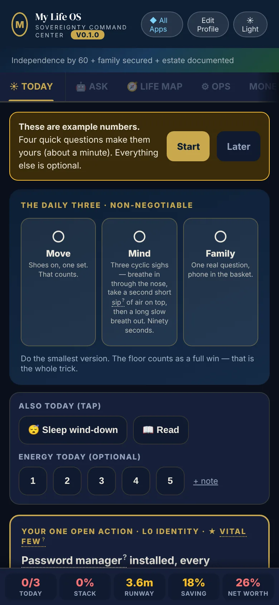
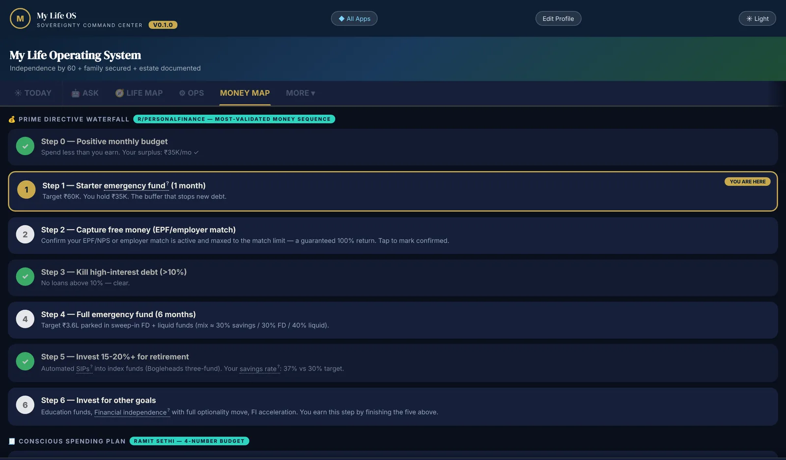
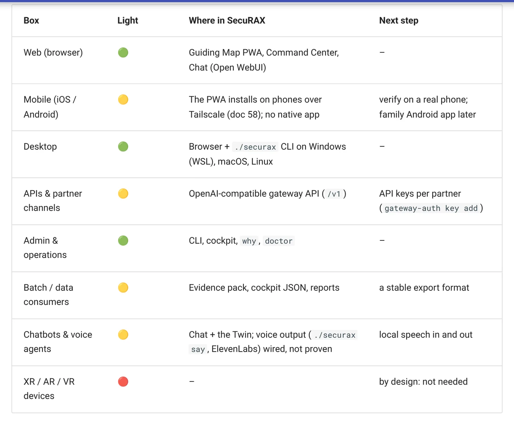

Your private AI, on your own devices.
One AI that knows your goals, your money, your work and your family. Your secrets stay on hardware you own, every word is guarded like a bank, and it makes you 1% better, every single day.
Free forever for individuals · runs on a 16 GB laptop · your first answer in about 30 minutes · no card, no account

Use the AI models you already trust, or run fully offline
- Gemini
- Groq
- NVIDIA NIM
- DeepSeek
- OpenRouter
- Llama
- Qwen
- Offline
For anyone with something worth protecting.
Public AI learns from everyone and remembers everything you tell it. SecuRAX works for one owner, you, and keeps what it knows on machines you control.
👤 Individuals and families
Plan money, health, career and family on one private map. Your documents, your history and your children's details never sit on someone else's server.
🚀 Founders and entrepreneurs
Think out loud about the deal, the hire and the pivot. The confidential parts are answered on your own machine, never by someone else's cloud.
⭐ Creators and public figures
Draft, plan and decide in private. Contracts, travel and personal matters stay off the cloud, where leaks become headlines.
💼 Professionals and leaders
A chief of staff that remembers every priority, prepares every meeting and keeps client details redacted before any model sees them.
🏢 Organisations and regulated firms
Give everyone AI they will actually use, with the redaction, audit trail and RBI and SEBI evidence your auditors expect.
🏛 Governments and nations
Sovereign AI on your own hardware: it works air-gapped, with no foreign cloud and no outside party in the loop.
Private. Guarded. Provable.
Three promises, kept in code and checked by a test on every change, not in a privacy policy.
Private
Your thoughts stay yours. It runs on your laptop or server, and anything sensitive is answered only by the model on your own machine.
- India residency mode
- Works fully offline
- Your phone, over a private tunnel
Guarded
Built to banking security habits. One gateway blocks attacks and strips personal data before any model sees it.
- Prompt-attack rails, fail-closed
- PAN, Aadhaar, card and mobile redaction
- Post-quantum-ready encryption
Provable
No "trust us". Every promise links to the test that proves it, and a status light shows what is real today.
- RBI, SEBI CSCRF, NIST AI 600-1
- One-command evidence pack
- A status light on every feature
It guards you, even from your own copy-paste.
Two real prompts, run through SecuRAX's guardrails. This is the actual output, not a mock-up.
mobile [IN_MOBILE_REDACTED] wants a loan top-up.
Sample data, not a real customer. Every block and redaction is written to an audit log you can read.
Two minutes every morning. That's the whole habit.
One screen shows what matters today: three small non-negotiables, the one open action, and what is due. It installs on your phone and works without a connection.
Built and provenMoney, career and family, on one honest map.
A step-by-step money waterfall that shows where you stand, a career compass that scores every offer against your floor, and a life map with benchmarks, not verdicts. It is all computed on your device.
Built and proven
Know exactly what is real, and what is next.
Every capability carries a light: green when a test proves it, amber when it is partly there, red when it is not built yet. Anyone can read the whole roadmap on one page.
Built and proven
From clone to a guarded answer in three steps.
No servers to rent and no accounts to create. The commands are guided and keys are typed in hidden input.
Install
On Windows (WSL), macOS or Linux. It sizes itself to your machine.
./securax setupLock it down
Keep personal and bank data local, and encrypt every backup.
./securax residency enable --jurisdiction INTake it with you
Your phone and tablet, over a private tunnel only your devices can reach.
./securax phones --apply1% better every day is 37× better in a year.
1.01365 ≈ 37.8. SecuRAX turns that arithmetic into a habit: two minutes each morning, one honest map of your life, and an AI that remembers what you said you would do.
Morning: two minutes
Three small non-negotiables, your energy, and the one action that matters most today. It works offline, on your phone.
Day: a second brain
Ask the Twin anything. It knows your goals and your history, and pushes back when a plan does not add up.
Every month: compound
Money, career, health and family reviewed against benchmarks, not verdicts, so you always know the next 1%.
Strong enough for the people who answer to regulators.
Each mapping links every control to the test or journey that proves it, and lists the gaps that remain.
These are mappings with linked evidence, not certifications. SecuRAX has not yet been independently audited, and we say so.
What it does for you today.
14 tools for one person, newest first, each with the one command that opens it. They are part of the 58 things SecuRAX does.
Catch me up
In ten seconds you see the few things that actually need you today, nothing leaves your box.
./securax catchupBuilt and proven
One lever a week
Every week the one thing most worth changing about your life is chosen for you and made effortless, so you improve where it actually matters without having to decide what to work on.
./securax improveBuilt and proven
One idea a week
Every week one timeless, high-leverage idea sharpens how you think, decide and work, tied to a goal you set, so you compound as a professional and a person instead of drowning in a feed you have to wade through.
./securax insightBuilt and proven
Scan a document with your phone
You capture a paper document in seconds from your phone without typing it out, and it never leaves your device.
./securax openPartly built
Understands what it sees, and spots scams
The gap between a thing in your hand and a decision in your Life OS nearly disappears — and a scam is caught before you tap, not after.
./securax openPartly built
Life papers, read for you
No more updating spreadsheets by hand to know what is still open: the few things that matter come to you, with a date and an alarm.
./securax lifeos import workbookPartly built
Your progress
You see, every week, that your days and your estate are getting better, and you always know the one next step.
./securax progressPartly built
Apps for Android and iOS
An app you built for yourself can be in a store without rewriting it, and you know in advance what a reviewer will ask for.
./securax os mobile-check vantagePartly built
Life OS Inbox
Nothing you capture is lost; each item becomes a decision or a task.
./securax openPartly built
Password manager
You stop reusing passwords, and get them on every device.
./securax start passwordsPartly built
Sign in to AWS, Google Cloud, Azure
You can grow to a real cloud setup when you are ready, without starting again.
./securax cloud login awsPartly built
SecuRAX on every device
Your estate works from your phone anywhere, like any app.
./securax online setupPartly built
Your AI history
Everything you learned with other AIs becomes yours to search and reuse.
./securax knowledgeBuilt and proven
Guiding Map
Your days line up with what matters to you, and you can see it happening.
./securax openBuilt and proven
Free to own, forever. Pay only when you want help.
The Community Edition is the whole product, free to use. Paid editions add support and multi-user operations; they will never take features away.
Community
- The complete single-machine product
- Gateway, Twin, cockpit and Guiding Map
- Free-first AI with a local floor
- Residency mode and encrypted backups
- Community support on GitHub
Professional
- Everything in Community
- Guided installation on your hardware
- Email support with response targets
- Home-server sizing and setup
Enterprise & Government
- Everything in Professional
- SSO, MFA and per-team roles
- SIEM integration and audit packs
- Multi-machine resilience and DR
Questions people ask
Do I need to be technical?
You need to be able to copy a few commands. The setup is guided, keys are typed in hidden input, and ./securax doctor tells you in plain words what to fix. The Professional edition will set it up for you.
Does my data leave my machine?
Not the sensitive part. With residency enabled, personal and bank-related data is answered only by the model on your own machine. Cloud models are optional and receive only what your policy allows, after redaction.
Is it as smart as ChatGPT?
For everyday questions it uses the same class of models (Gemini, Llama, Qwen, DeepSeek and others), chosen automatically and failing over in seconds. For private questions it uses the model on your machine, which is smaller but never leaves it.
What does it cost?
Nothing to own or run. The default AI uses free tiers and ends on a local model. Paid models are opt-in, behind a hard monthly budget cap.
Can an organisation rely on it?
It is mapped to RBI, SEBI CSCRF, NIST AI 600-1 and CCSP with linked evidence, but it is not yet independently audited or certified. Run it on hardware your organisation approves, and never on an employer-issued device for personal use.
Own your intelligence.
Install it tonight. Use it for seven mornings. If you are not 1% better, you have lost nothing.